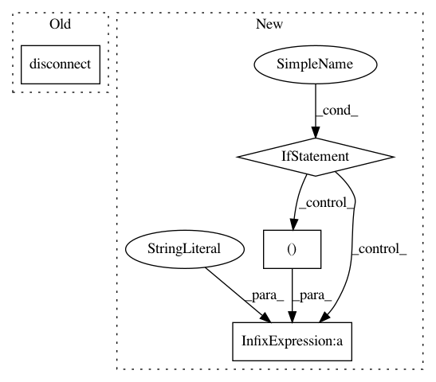

f7206ab7d9afdfac1b0437597843377105371d30,anvio/tables/miscdata.py,AdditionalDataBaseClass,add,#AdditionalDataBaseClass#Any#Any#Any#,722
Before Change
database = db.DB(self.db_path, utils.get_required_version_for_db(self.db_path))
database._exec_many("""INSERT INTO %s VALUES (?,?,?,?,?,?)""" % self.table_name, db_entries)
database.disconnect()
self.run.warning("", "NEW DATA", lc="green")
self.run.info("Database", self.db_type)
self.run.info("Data group", self.target_data_group)
After Change
self.progress.new("Adding data to DB", progress_total_items=num_entries)
for i, item_name in enumerate(data_dict):
if (i % 100000) == 0:
self.progress.increment(increment_to=i)
self.progress.update("%d / %d Rows ⚙ | Writing to DB 💾 ..." % (i, num_entries))
self.store_buffer()
self.storage_buffer = []
self.progress.update("%d / %d Rows ⚙ ..." % (i, num_entries))
for key in data_keys_list:
self.storage_buffer.append(tuple([self.next_id(self.table_name),
item_name,
key,
In pattern: SUPERPATTERN
Frequency: 3
Non-data size: 4
Instances
Project Name: merenlab/anvio
Commit Name: f7206ab7d9afdfac1b0437597843377105371d30
Time: 2020-04-30
Author: kiefl.evan@gmail.com
File Name: anvio/tables/miscdata.py
Class Name: AdditionalDataBaseClass
Method Name: add
Project Name: merenlab/anvio
Commit Name: 49efa4a7260be8ed44986ad93fd3594391865c09
Time: 2020-03-22
Author: a.murat.eren@gmail.com
File Name: anvio/genomedescriptions.py
Class Name: GenomeDescriptions
Method Name: get_genome_hash_for_internal_genome
Project Name: merenlab/anvio
Commit Name: 49efa4a7260be8ed44986ad93fd3594391865c09
Time: 2020-03-22
Author: a.murat.eren@gmail.com
File Name: anvio/genomedescriptions.py
Class Name: GenomeDescriptions
Method Name: get_genome_hash_for_external_genome